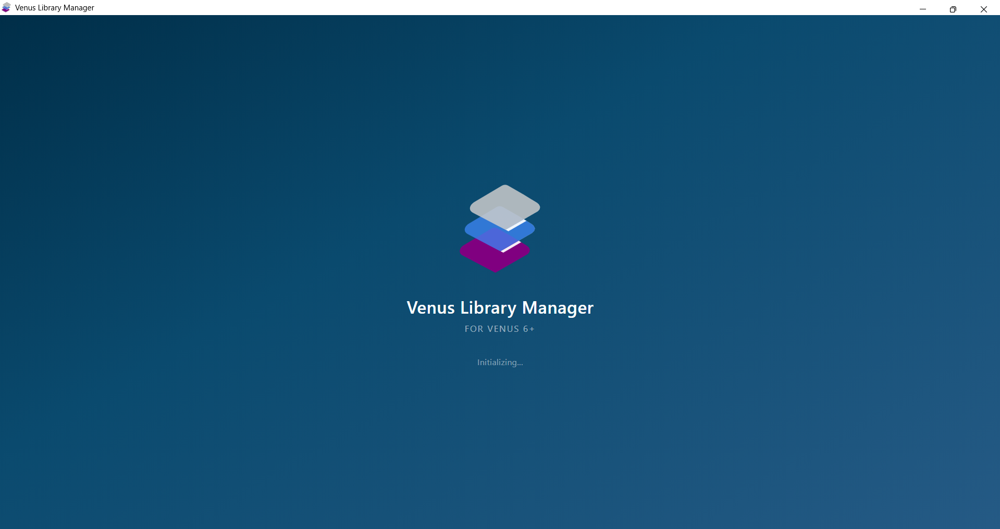

Overview
When Library Manager launches, a splash screen is displayed as a true loading gate — the main application interface is not revealed to the user until every startup task has completed successfully. This ensures the user never sees a partially-rendered interface or interacts with the application before system library integrity checks have finished.
What the User Sees
The splash screen displays:
- An animated SVG logo (the Library Manager icon with a smooth CSS keyframe animation)
- The application name: Library Manager
- The subtitle: Hamilton VENUS
- A live status line that updates in real time as each startup phase completes (e.g.,
Loading library data...,Building interface...,Verifying system libraries...,Finalizing...,Ready)

The splash fades out smoothly once all work is done, revealing the fully-rendered home screen.
Performance Design
Several techniques are used to ensure the splash screen appears instantly with a smooth, jank-free animation:
Instant First Paint (No White Flash)
| Technique | Purpose |
|---|---|
NW.js show: false |
The window is created hidden ("show": false in package.json). The NW.js window is only made visible via win.show() after the splash screen DOM has painted. This eliminates the white flash that would otherwise appear while the browser engine initializes. |
| Inline critical CSS | All splash screen styles are inlined in the <head> as a <style> block, placed before any external stylesheet <link> tags. This means the splash renders from the inline styles alone, without waiting for Bootstrap, Font Awesome, or main.css to load. |
| Deferred external CSS | The three external stylesheets (bootstrap.min.css, all.min.css, main.css) use rel="preload" with an onload handler that switches them to rel="stylesheet" once loaded. This makes them non-render-blocking — the splash paints instantly from inline styles. |
| Inline SVG | The animated logo SVG is embedded directly in the HTML rather than loaded as an external file. This eliminates a network/file-system fetch and ensures the animation begins on the very first paint frame. |
Double requestAnimationFrame for win.show() |
A tiny inline <script> placed immediately after the splash <div> uses a double requestAnimationFrame to ensure the splash has actually composited before making the window visible. |
| Pre-size & maximize before show | If the user’s last session was maximized, the inline script pre-sizes the hidden window to the available screen dimensions (win.moveTo + win.resizeTo) before calling win.show(), then immediately calls win.maximize(). Because the window is already full-screen sized when it becomes visible, the maximize is invisible—eliminating the “resize flash”. The maximized flag is read from localStorage (instant, no file path ambiguity) with a fallback to settings.json on first launch. |
html, body background color |
The html and body elements have their background set to #002e48 (the splash gradient’s darkest color) via inline CSS. Even if a single frame renders before the splash gradient, it will be dark blue instead of white. |
Smooth Animation (No Jitter)
| Technique | Purpose |
|---|---|
| GPU compositing | The animated SVG element uses will-change: transform; transform: translateZ(0), which promotes it to its own GPU compositor layer. The browser’s compositor thread handles the animation independently of what the main JavaScript thread is doing. |
Child-process worker (syscheck-worker.js) |
All heavy file I/O — reading HSL files from disk, parsing Hamilton metadata footers, verifying checksums, scanning the package store for missing backups — runs in a separate Node.js child process forked via child_process.fork(). This completely removes file system work from the main thread, keeping the compositor layer unblocked. |
requestAnimationFrame yields |
The main-thread init steps (path setup, group creation, navigation) are separated by requestAnimationFrame calls rather than setTimeout(0). This guarantees at least one animation frame renders between each step, even if a step takes a few milliseconds. |
Deferred heavy work from initVENUSData() |
The initVENUSData() function only sets VENUS path defaults in the database (fast, <5ms). The three heavy operations — metadata stamping, system library backup, and integrity checking — are handled by the worker process. |
Startup Sequence
The following steps occur in order. The splash screen gates each phase and only dismisses after all steps have completed.
| Phase | Thread | Status Text | What Happens |
|---|---|---|---|
| 1 | Main | Initializing... |
NW.js creates the hidden window. Inline splash styles + inline SVG render. The inline script reads the persisted maximized flag from localStorage (falling back to settings.json on first install). If the window should be maximized, its dimensions are set to screen.availWidth × screen.availHeight while still hidden. After the double-requestAnimationFrame gate, win.show() reveals the already-full-size window, followed immediately by win.maximize() (invisible). External CSS begins preloading in the background. |
| 2 | Main + Worker | Loading library data... |
The system-check worker is forked and sent the system libraries list, baseline data, and package store path. Simultaneously, initVENUSData() runs on the main thread to set VENUS path defaults. |
| 3 | Main | Building interface... |
createGroups() builds the navigation bar, group containers, settings accordion, and system library entries in the DOM. |
| 4 | Main | — | navigateHome() activates the home screen and builds all library cards. The main UI is now fully rendered behind the splash. |
| 5 | Main (waiting) | Verifying system libraries... |
The main thread waits for the worker process to finish. The worker performs: baseline generation (if none exists), missing-backup detection, and integrity verification of every system library’s HSL files against stored checksums. |
| 6 | Main | Finalizing... |
Worker results arrive via IPC. The main thread processes them: persists any newly generated baseline, stamps metadata (first run only), creates missing backup packages, and auto-repairs any integrity failures from cached packages. |
| 7 | Main | Ready |
All work is complete. The splash fades out over 700ms. The user sees the fully-rendered, fully-verified application. |
Worker Process Architecture
The worker script (html/js/syscheck-worker.js) is a standalone Node.js script with no DOM or NW.js dependencies. It communicates with the main process via IPC messages:
Input Message
{
type: "run",
payload: {
sysLibDir: "C:\\Program Files (x86)\\HAMILTON\\Library",
systemLibraries: [ /* array of system library objects */ ],
baseline: { /* integrity baseline from system_library_hashes.json */ },
packageStoreDir: "C:\\...\\local\\packages",
settingsFlags: { sysLibMetadataComplete: true, sysLibBackupComplete: true }
}
}Output Message
{
type: "result",
payload: {
integrityResults: { "LibName": { valid: false, errors: [...], warnings: [...] } },
missingPackages: [ "LibName1", "LibName2" ],
baselineGenerated: null | { /* new baseline data */ },
metadataNeeded: false,
backupsNeeded: false,
error: null | "error message"
}
}The worker exits after sending its result. If the worker crashes or fails to respond, the main thread falls back to running the integrity checks inline (which may cause brief animation jitter but ensures the checks still complete before the splash is dismissed).
Gating Behavior
The splash screen is a hard gate:
- The user cannot interact with the application while the splash is visible (it is a full-viewport fixed overlay at
z-index: 99999). - The splash is only dismissed after all seven phases above have completed.
- If any phase encounters an error, it is caught and logged, but the startup sequence continues. The splash still gates until completion.
- The fade-out animation (
opacitytransition over 700ms) provides a smooth visual transition. The splash DOM element is removed from the document after the fade completes.